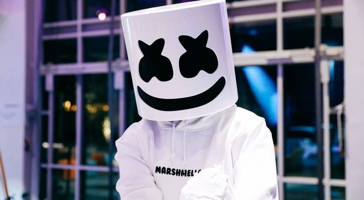
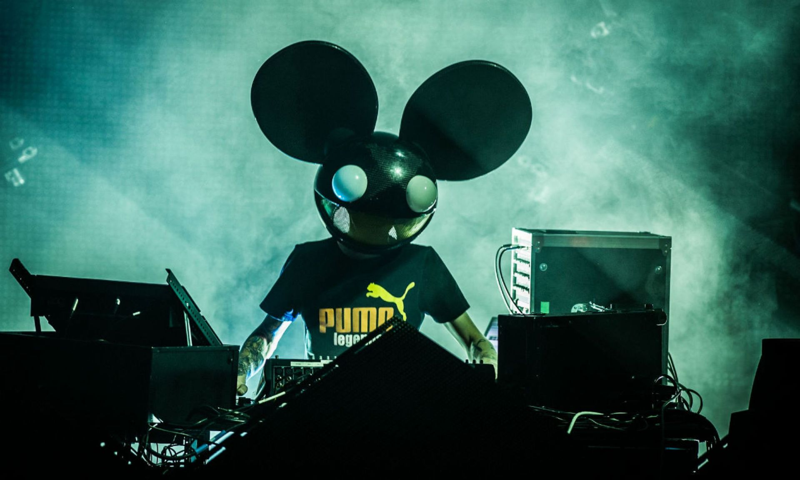

My First Blog Post
April 12, 2020
MARSHMELLO
 marshmello.jpgChristopher Comstock (born May 19, 1992), known professionally as Marshmello, is an American electronic music producer and DJ. He first gained international recognition by releasing remixes of songs by American DJ duo Jack Ü and Russian-German DJ Zedd. He is best known for the songs "Silence", "Wolves", "Friends", and "Happier", all of which have been certified multi-platinum in several countries and appeared in the Top 30 of the Billboard Hot 100.
His debut studio album, Joytime, was released in January 2016, which included the lead single and Marshmello's debut single "Keep It Mello". Marshmello's second song in 2016, a platinum-certified single titled "Alone", was released in May via the Canadian record label Monstercat. Having peaked on the US Billboard Hot 100 at number 60, it became his first single to be certified platinum in the US and Canada with over a million copies of certified units.[a] That year, he released three subsequent singles. In 2017, after releasing singles such as "Chasing Colors", "Twinbow" and "Moving On", Marshmello collaborated with American R&B singer Khalid to release "Silence" as a single, which was certified platinum and multi-platinum in eight countries. Succeeding another single, one of his best-selling singles, a collaboration with American singer Selena Gomez, titled "Wolves" was released.
DEADMAU5
 deadmau5.jpgJoel Thomas Zimmerman (born January 5, 1981), known professionally as Deadmau5 (stylized as deadmau5; pronounced "dead mouse"), is a Canadian electronic music producer, DJ, and musician. Zimmerman mainly produces progressive house music and sometimes other forms of electronic music. His works have been included in compilation albums such as Tiësto's In Search of Sunrise 6: Ibiza and presented on Armin van Buuren's A State of Trance radio show.
Zimmerman has received six Grammy Award nominations for his work. He has worked with other DJs and producers, such as Kaskade, MC Flipside, Rob Swire and Wolfgang Gartner. He has also collaborated with Steve Duda under the group name BSOD (Better Sounding On Drugs), and was part of the group named WTF? with Duda, Tommy Lee, and DJ Aero. In 2007, he founded his own record label, Mau5trap. Deadmau5 is currently one of the highest paid electronic music producers in the world,[3] and is a masked music artist similar to Marshmello and Daft Punk.
Credits:
www.wikipedia.com